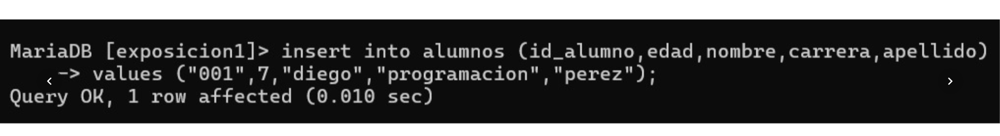
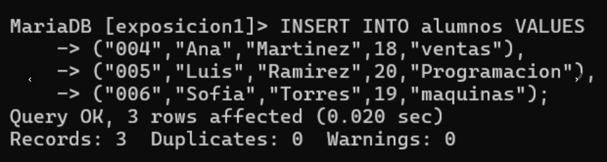
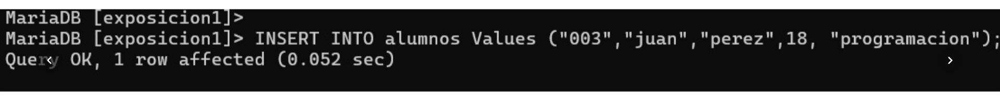

Insertar Registros en SQL
En SQL existen varias formas de insertar registros en una tabla. El comando principal es INSERT INTO, y puede usarse de diferentes maneras según la estructura de los datos o la fuente de información.
Forma 1: Insertar un solo registro
Se usa para agregar una sola fila de datos a la tabla.
INSERT INTO alumnos VALUES ("003","juan","perez",18,"programacion");
Forma 2: Insertar varios registros a la vez
Permite agregar múltiples filas en una sola instrucción.
INSERT INTO alumnos VALUES
("004","Ana","Martinez",18,"ventas"),
("005","Luis","Ramirez",20,"Programacion"),
("006","Sofia","Torres",19,"maquinas");

Forma 3: Insertar especificando columnas
Se usa cuando no se llenan todas las columnas o se desea indicar el orden exacto.
INSERT INTO alumnos (id_alumno,edad,nombre,carrera,apellido)
VALUES ("001",7,"diego","programacion","perez");

Forma 4: Insertar desde un archivo CSV
Esta forma permite importar datos desde un archivo externo (por ejemplo, creado en Bloc de notas o Excel). El archivo debe tener formato CSV (valores separados por comas) y guardarse en una ruta accesible por MySQL.
LOAD DATA INFILE 'C:/xampp/mysql/data/alumnos.csv'
INTO TABLE alumnos
FIELDS TERMINATED BY ','
LINES TERMINATED BY '\n'
(id_alumno, nombre, apellido, edad, carrera);
Antes de ejecutar el comando, asegúrate de que el archivo esté cerrado y tenga los datos correctamente separados por comas.
Infografía general
Recomendaciones
- Verifica los tipos de datos antes de insertar (VARCHAR, INT, etc.).
- Evita duplicar claves primarias.
- Usa SELECT * FROM alumnos; para confirmar los registros insertados.
- Guarda tus archivos CSV con codificación UTF‑8 para evitar errores de caracteres.